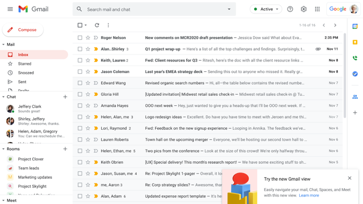

Noticias
Las cinco cosas a las que tienes que prestar atención para saber si te han 'hackeado' el correo
Para evitar problemas, es importante cambiar la contraseña cada seis meses y emplear siempre claves que
sean robustas.
En caso de duda, el usuario tiene a su disposición varias herramientas que pueden
permitirle saber si su mail ha caído en malas manos

- En primer lugar, a los correos electrónicos en tu bandeja de entrada y de envío que no reconoces.
- Un cambio reciente de contraseña que no has realizado, y que no te permite entrar en tu correo, es síntoma de 'hackeo'.